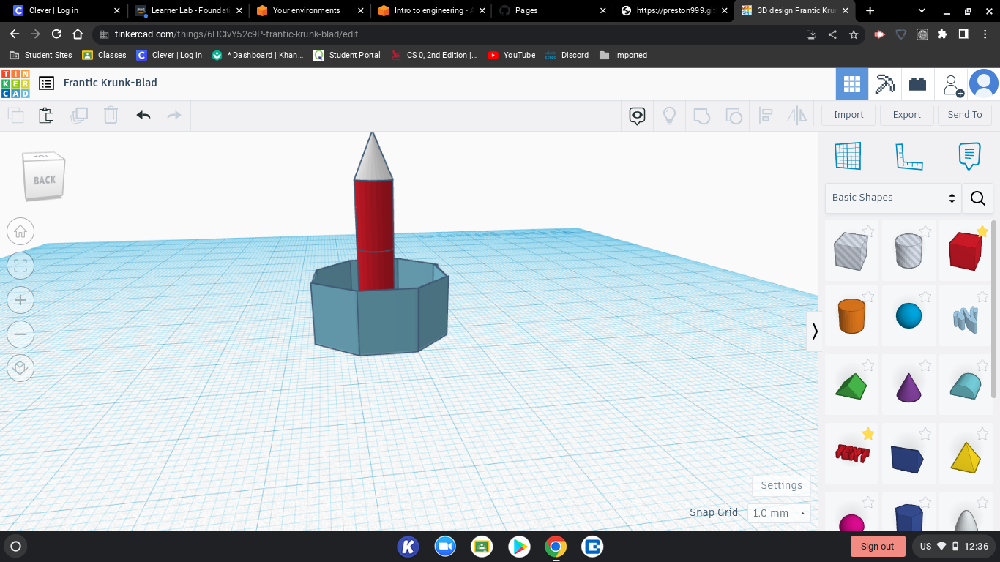

9/2 - This week we worked on a CAD challage building a kitchen appliance
9/16 - This week we started designing our rube goldberg project on tinkercad
9/23 - This week we were building our rube goldberg machine.
10/3 - This week we made a tinkercad on prosthetics.
10/10 - This week we started cadding a rocket on tinkercad
10/21 - This week we launched our bottle rockets.
11/1 - This week we started to learn about electrical engineering.
11/8 - This week we started to do hands on activities
11/16 - This week we strted Arduino
11/23 - This week we didnt do anything because we had no school.
11/30 - This week we started cading our spaghetti bridge.
12/07 - This week we dessided to change our design. We have already tested twise and they went succesfull. But we want a better outcome.
12/14 - We are finishing up our final product and everything looks good.
12/21 - This is our last week and we are going to test our final roduct
linkThis link will take you to a video of our rube goldberg and what we did. Our design was to drop the baseball into the cup and the cup would hit the car and push it down. Once the car is pushed down it will pop the ballon with the needle taped on to the car.

This is a picture of a duck with a prosthetic. I made this on tinkercad. The reason i made this was because we were assigned to make a prosthetic for an animal. But the reason i chose a duck was because they are very underated/forgoten and i wanted to design my own for them.

This is my home applience. I made a microwave on tinkercad. I couldnt finish the numbers you hit to put the time but i finished everything else.
This is the rocket i designed. We didnt use this one we used Tristans.
linkThis is a link of our bottle rocket. We got 1st place. Our rocket was designed by water and air pressure.

This is a curcuit i designed on tinkecad.
This is a picture of our bread board. As you can see we made our light, light up.
 This is a picture of the bridge i designed.
This is a picture of the bridge i designed.